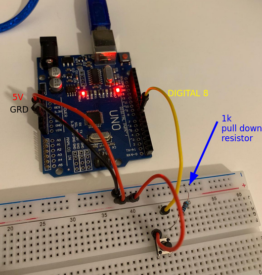

2024-04-28
The ATMega328P has three kinds of interrupts:
external interrupts: E.g. a change in voltage on an external pin.timer interrupts: E.g. when the timer reaches a certain value or overflows.serial communication interrupts: E.g. a particular event from UART or SPI
triggers an interrupt.When an interrupt occurs, the microcontroller suspends the current execution of the program (changing the instruction pointer register), and jumps to a place in memory that points to an interrupt vector table.
The interrupt vector table contains the address of functions that need to be called for particular interrupts.
These functions are often called interrupt service routine (ISR), or simply "interrupt handler".
The interrupt vector table is available on section 11.1 of the manual.
Interrupts can be disabled temporarily by calling cli() and can then be
re-enabled by calling sei():
#include <avr/interrupt.h>
int main() {
// Disable interrupts
cli();
// Critical section without interrupts
// (e.g., accessing shared resources)
// Re-enable interrupts
sei();
// Rest of the code with interrupts enabled
}
Multi-byte objects: Always disable interrupts before updating multi-byte
objects.Updating multiple variables atomically: If you rely on a pack of variables
to be set in a particular way, you should disable interrupts first, lest you
end up with half of the pack updated, and the other half out of date.Hardware access: Some hardware expect a sequence of read-modify-write
operations to be handled.Bootloader of firmware update: No interrupts here otherwise the system will
become corrupted.Real time constraints: With interrupts you lose some of the deterministic
aspect of real-time systems.The script below prints "I have been pressed!", every time the button has been pressed. It can print to usart and picocom if you're using the usart script from my previous note: usart
#include <avr/interrupt.h>
#include <stdio.h>
#include "../include/usart.h"
void configure_interrupt() {
/*
* Interrupt that happens when PB0 is "pressed".
* In arduino, this is digital 8.
*
* 1. Set PB0 as input with pull-up resistor.
* 2. Activate interrupts in PCINT7..0.
* 3. But only enable interrupts for PB0.
* 4. Enable interrupts globally.
*
* Note: PCINT0 is another name (special function) for PB0.
*/
DDRB &= ~(1 << PB0);
PORTB |= (1 << PB0);
PCICR |= (1 << PCIE0);
PCMSK0 |= (1 << PCINT0);
sei();
}
static void button_interrupt() {
/*
* Code that runs when the button is pressed.
*
*/
printf("I have been pressed!\r\n");
}
ISR(PCINT0_vect) {
if (!(PINB & (1 << PB0))) {
button_interrupt();
}
}
int main(void) {
usart_init();
configure_interrupt();
printf("Let's go boys\r\n");
while (1) {
}
return 0;
}
The board can be wired like in the picture below. It is important to set up the pull-down resistor, otherwise the button will be in a floating state and won't work.
